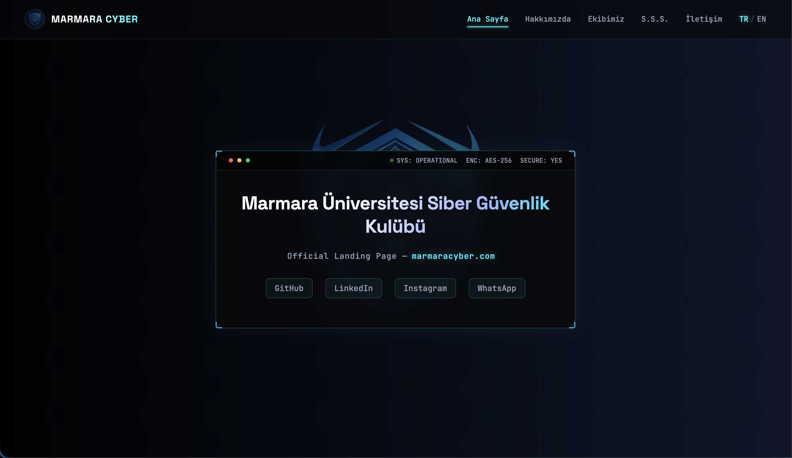

Marmara Üniversitesi Siber Güvenlik Kulübü için sıfırdan geliştirilen; terminal temalı status bar, dinamik dil desteği ve hiyerarşik ekip yapısına sahip resmi web platformu.
Canlı Siteyi Ziyaret EtMarmara Cyber, kulübün kurumsal kimliğini yansıtmak, etkinlikleri duyurmak ve öğrencilere siber güvenlik alanında rehberlik etmek amacıyla hayata geçirildi. Tasarım aşamasında klasik şablonlardan kaçınılarak tamamen siberpunk ve terminal estetiğine odaklanıldı. Ziyaretçilerin siteyi hem Türkçe hem İngilizce deneyimleyebilmesi için harici kütüphane kullanmadan tamamen saf JavaScript ile dinamik bir çeviri (i18n) altyapısı kuruldu.
AES-256 şifreleme göstergeleri ve canlı sistem durumu simülasyonu.
Sayfa yenilenmeden anlık Türkçe ve İngilizce (TR/EN) geçiş mekanizması.
Başkan, başkan yardımcısı ve komite başkanlarının kademeli olarak sergilendiği yapı.
Formspree entegrasyonu, XSS koruması ve honeypot tabanlı bot engelleme katmanı.
Ekstra ağır kütüphaneler kullanılmadan, tamamen saf JavaScript ile yazılmış anahtar-değer tabanlı çeviri mimarisi.
Kulübe yeni katılanların en sık sorduğu soruları yanıtlayan, pürüzsüz açılıp kapanan dinamik Sıkça Sorulan Sorular bileşeni.
İletişim formunda girdi sanitizasyonu (HTML entity encoding) ve spam koruması için gizli honeypot alanları yer alıyor.
